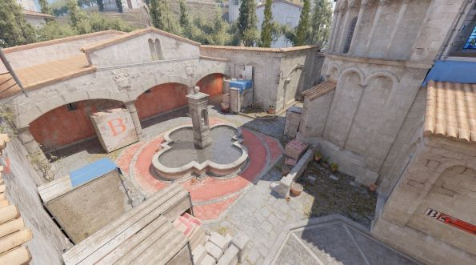

RUSTICOS LE GANÓ 2-1 A FURIA EN UN INFERNO MUY COMPLICADO
Rusticos jugó un partido amistoso contra furia donde todo se definió en el mapa INFERNO, mapa que se le da muy bien a furia, pero Rusticos lo pudo neutralizar y ganarle.

Las noticias del mejor de Argentina
Rusticos jugó un partido amistoso contra furia donde todo se definió en el mapa INFERNO, mapa que se le da muy bien a furia, pero Rusticos lo pudo neutralizar y ganarle.
Luke últimamente está mostrando un nivel muy bueno en el equipo y eso hace que se hable de él en toda la región y por eso hicimos esta noticia dedicada para él.